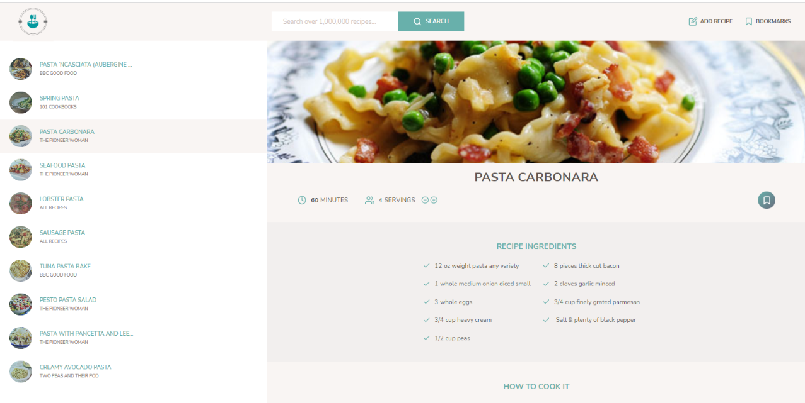

Recipe-Application
A recipe collection application using a recipe API and JavaScript with SASS. Features include searching for recipes, pagination, adjust serving size, adding and bookmarks of recipes using local storage.
A recipe collection application using a recipe API and JavaScript with SASS. Features include searching for recipes, pagination, adjust serving size, adding and bookmarks of recipes using local storage.